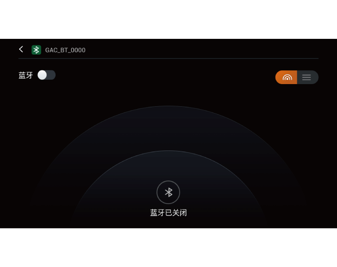
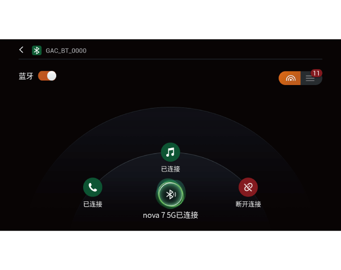
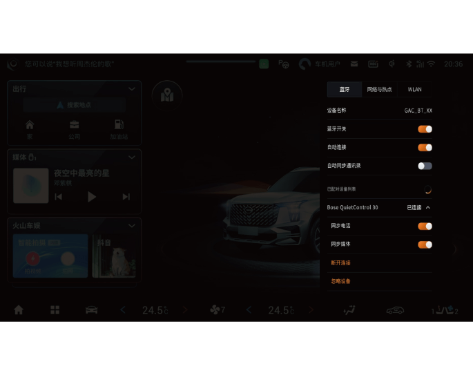

4.6.8 蓝牙功能
AV主机蓝牙模式
通过以下方式进入蓝牙模式：
–进入应用菜单界面点击“蓝牙电话”软按键，进入蓝牙模式。
–点击卡片模式主界面的“蓝牙电话”卡片，进入蓝牙模式。
–点击下拉菜单的软按键进入蓝牙模式。

– 如果尚无蓝牙设备连接，点击以上方式进入蓝牙连接界面。
–点击“蓝牙开关” 软按键开启蓝牙功能后，车机自动搜索周边的蓝牙设备。蓝牙连接界面有两种显示模式“雷达”、“列表”。
软按键开启蓝牙功能后，车机自动搜索周边的蓝牙设备。蓝牙连接界面有两种显示模式“雷达”、“列表”。
雷达显示模式
– 蓝牙设备：显示附近可连接的蓝牙设备名称，选择需要连接的设备并点击进行蓝牙连接。
–切换列表显示模式：点击软按键切换至列表模式，列表模式显示的数字为周边可连接的蓝牙设备数量。
列表显示模式
– 蓝牙设备：显示周边可连接的蓝牙设备，并以列表样式显示。
–切换雷达显示模式：点击软按键切换至列表模式，显示周边可连接的蓝牙设备数量。

蓝牙连接后，状态栏图标高亮，并在蓝牙连接界面显示连接的蓝牙设备名称:
– 点击软按键，可同步手机电话号码、通讯录等信息。
– 点击软按键，同步蓝牙音乐播放的歌曲名称、歌词等信息。
– 点击软按键，断开蓝牙连接。
AVNT主机蓝牙模式
通过以下方式进入蓝牙模式：
–进入应用菜单界面点击“蓝牙电话”软按键，进入蓝牙模式。
–点击智能卡片区的“蓝牙电话”卡片，进入蓝牙模式。
–击音响系统界面右上角状态栏图标，打开蓝牙。
–如果尚无蓝牙设备连接，点击以上方式进入蓝牙连接界面。
–点击“蓝牙开关”软按键开启蓝牙功能后，车机会自动搜索周边的蓝牙设备。
–蓝牙连接后，状态栏图标高亮。
–点击“自动同步通讯录”软按键，可同步手机电话号码、通讯录、媒体等信息。
–再次点击蓝牙开关软按键，断开蓝牙连接。
蓝牙连接故障
| 可能原因 | 解决方法 |
| 设备的蓝牙设置不正确 | 设备蓝牙设置中设为“所有人可见”或可被搜索或开放检测 |
| 当前的设备和车载蓝牙系统不兼容 | 确认设备蓝牙版本兼容性，升级手机系统到最新版本再尝试 |
| 手机蓝牙有其它设备连接记录 | 建议删除原来连接过的蓝牙设备 |
— 页面到底了 —